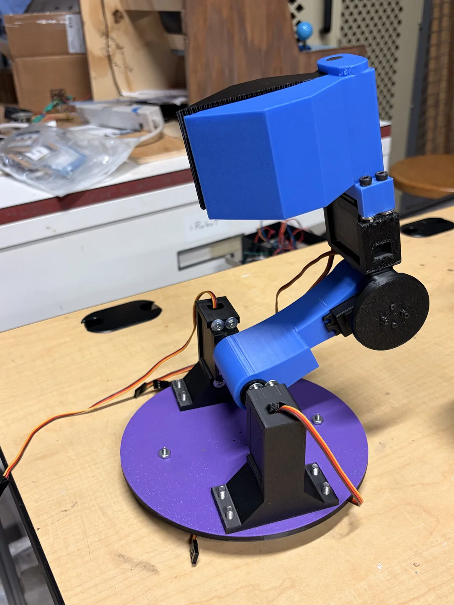
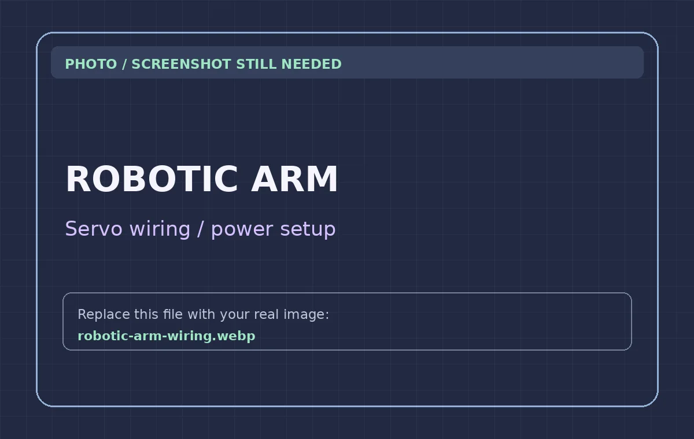
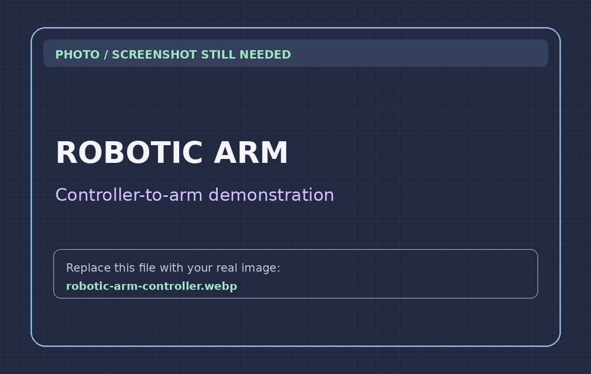

Controller mapping
Interpret computer/controller input as joint-angle commands the Arduino can use.
Lunarbotics outreach / robotics / in progress
I'm working on the integration side of a multi-joint robotic arm: making computer/controller commands translate into predictable servo motion through an Arduino Mega, while dealing with the mechanics and wiring of a physical prototype.

01 / the goal
The project is a 3D-printed robotic arm built for Lunarbotics outreach. The mechanical design has several joints powered by servos, and the control goal is to use commands from a computer or controller to position those joints.
One challenge is that a command can be perfectly reasonable in code but still cause a physical problem: power limits, sudden jumps, or a joint attempting to move past a mechanical constraint.
I'm documenting this as an in-progress build, rather than presenting a finished pick-and-place robot that hasn't been demonstrated yet.

02 / command architecture
Interpret computer/controller input as joint-angle commands the Arduino can use.
Send angle information over serial and check that messages reach the correct part of the system.
Test joint movement, pay attention to power, and reduce sudden or unexpected motion.
03 / current engineering problems
During development, I investigated motion where a servo jumped back after receiving a position command. That kind of behavior can come from software logic, power, startup state, or an unexpected command — so I'm treating it as an integration problem.
I moved toward a simple serial command path between the computer and Arduino rather than adding extra communication complexity too early. It makes it easier to inspect the values I'm actually sending.
A useful demonstration will show an input, the angle sent by the computer, and the corresponding joint movement in the same short clip.


It forces electronics, mechanics, and code to agree with each other. A working serial printout isn't enough; the actual arm has to do what I intended, safely and repeatedly. That's the part I'm working toward.